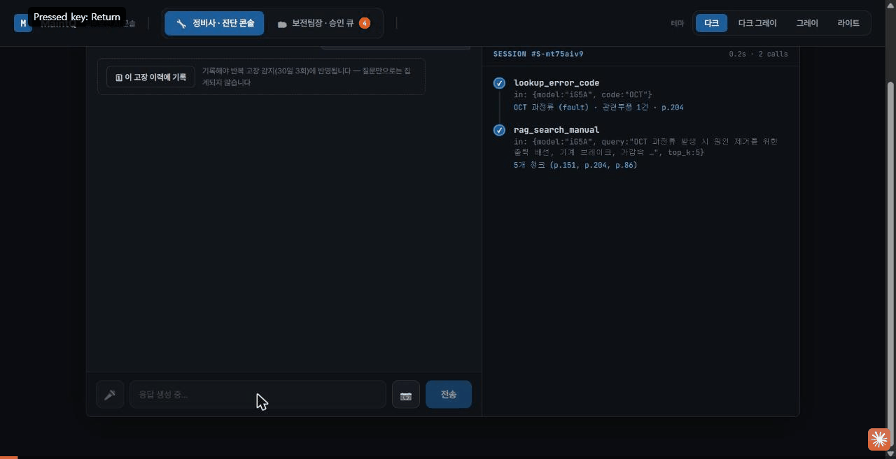
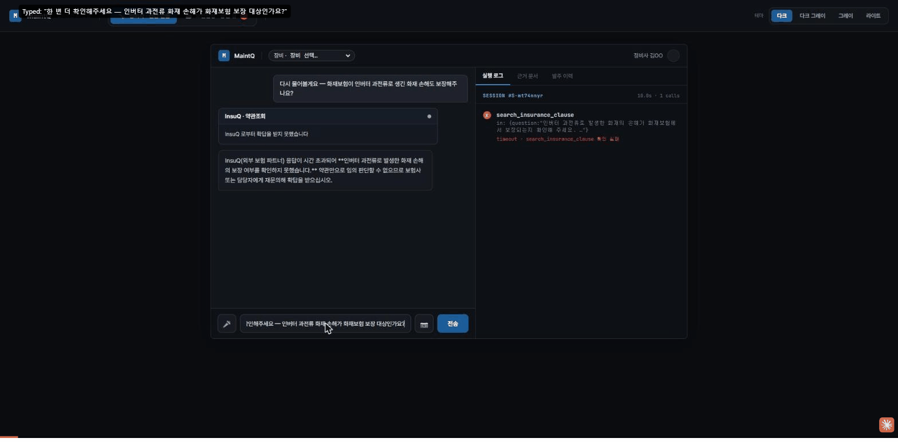
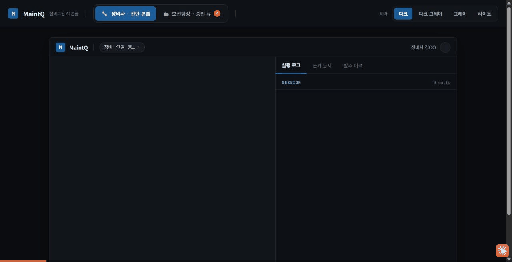

MaintQ · FinAllQ · InsuQ — 계약을 어떻게 맺었고, 데이터는 어떤 형태로 오가는가
MaintQ는 항상 요청을 시작하는 client이고, FinAllQ·InsuQ는 스킬을 노출하는 응답자다. FinAllQ는 일부 시나리오(S8·S13)에서 InsuQ에 대해 2차 홉 요청자 역할도 겸한다.
flowchart TD
subgraph MAINTQ ["MaintQ (제조 설비보전) — 항상 client, 스킬 노출 안 함"]
M["정비/발주/처분/수리"]
end
subgraph FINALLQ ["FinAllQ (은행·증권)"]
F["출금·이체·여신심사"]
end
subgraph INSUQ ["InsuQ (보험)"]
I["약관검색·정책원장·청구"]
end
M -- "request-withdrawal (S5)
assess-loan (S8)
실 어댑터 상대 E2E 성공" --> F
M -- "lookup-clause
코드 끝단 연결됨" --> I
F -- "verify-collateral-insurance (S8/S13, 2차 홉)
실 프로덕션 배포판 간 HTTP 검증" --> I
I -- "claim-insurance to advise-replacement-financing (S15)
InsuQ 수신부 완료" --> F
| 구분 | 내용 |
|---|---|
| 누가 요청을 시작하는가 | MaintQ가 유일한 client. FinAllQ·InsuQ는 응답자(FinAllQ는 2차 홉에서 InsuQ의 client가 되기도 함) |
| 계약의 형태 | Agent Card(스킬 목록·인증 방식 선언) + JSON Schema(스킬별 요청/응답 필드) 두 계층 |
| 계약이 어디에 있나 | 이 레포(A2A_Q)가 SSOT — docs/agent_cards/, docs/schemas/. 각 프로젝트 레포는 참조만 하고 복제하지 않는다 |
| 신원(누가 요청했는가) | 파트너 자격증명(토큰) = 인증, 요청 payload의 식별자 = 대상 지정. 두 층을 분리 |
flowchart TD
A["① Agent Card<br/>docs/agent_cards/*.json<br/>노출 스킬 목록 · 인증 방식 선언"]
B["② JSON Schema<br/>docs/schemas/skill-id.json<br/>스킬별 요청/응답 필드 정의"]
C["③ 어댑터 구현<br/>adapters/main.py (프로토타입)<br/>각 레포 실제 백엔드로 이관"]
A -->|"스킬마다 schema 경로를 가리킴"| B
B -->|"Pydantic 모델로 검증"| C
name, provider, authentication.schemes, skills[](각 스킬의 id·scenario·schema 경로)를 담는다.request.required/properties, response.properties(상태값 enum 포함), 공통 definitions.requester로 구성.adapters/는 프로토타입이며 최종적으로 각 레포가 흡수한다.왜 SSOT를 A2A_Q에 두는가 — 계약이 여러 레포에 복제되면 한쪽만 고치고 다른 쪽을 잊는 drift가 생긴다. MaintQ의 참조 문서는 "실제 스키마 원본은 A2A_Q에 있고 여기서는 복제하지 않는다"를 명시적으로 못박아 이 문제를 막는다.
초기에는 "요청 payload에 회사 식별자만 담으면 된다"는 안이었으나, 식별자는 공개정보라 번호만 알면 남의 회사 건을 요청할 수 있다는 문제로 폐기되고 아래 모델로 개정되었다.
flowchart TD
T["파트너 자격증명 (client credentials)<br/>서명된 액세스 토큰"] -->|"actor = 누가 호출했나 → 인증"| S
P["요청 payload의 requester 객체<br/>finallq_company_id / building_id / policy_id"] -->|"subject = 누구 건인가 → 대상 지정"| S
S["서버 위임 테이블<br/>partner_id → 다룰 수 있는 company_id 집합"] --> D["요청 승인/거절 판정"]
핵심 원칙: 식별자(subject) 존재 ≠ 인증. 실제 인증은 파트너 토큰(actor)이 하고, 서버는 "이 actor가 이 subject를 다룰 권한이 있는가"를 자체 위임 테이블로 검사한다. S8·S13(FinAllQ→InsuQ 2차 홉)은 actor(FinAllQ)≠subject(MaintQ 소유 건물)인 실제 사례다.
어떤 스킬 호출도 "사람이 연결을 승인"하기 전에는 발생할 수 없다. 온보딩은 A2A 프로토콜이 아니라 각 프로젝트(FinAllQ) 자체 기능으로 처리되며, A2A_Q는 그 결과물(발급된 자격증명)만 전제로 삼는다.
①②는 무겁고 1회성(기업 실재 확인·연결 승인), ③④는 그 이후 반복되는 가벼운 절차다. 자격증명은 "회사"가 아니라 회사를 대표하는 담당자(사람)에게 발급된다.
상담용 연결이 출금 권한까지 갖지 않도록, 자격증명 스코프를 최소 3단계로 나눈다.
| 등급 | 스킬 | 실행 위험 |
|---|---|---|
| 조회/상담 | advise-hedge(S6), advise-financing(S16), lookup-clause | 없음 제안/조회만 |
| 심사 | assess-loan(S8), assess-used-equipment-loan(S13) | 없음 조건부 승인일 뿐 실행 아님 |
| 자금이동 | request-withdrawal(S5), request-settlement(S12) | 높음 input-required 2단 승인 필수 |
docs/agent_cards/finallq.json 발췌){
"name": "FinAllQ",
"description": "은행·증권 통합 금융 에이전트. A2A로는 응답자이자 2차 홉 요청자(S8·S13·S15) 역할.",
"url": "https://finallq.internal/.well-known/agent-card.json",
"version": "0.1.0-draft",
"authentication": {
"schemes": ["oauth2-mock"],
"note": "M1 단계에서는 목업 토큰. 신원 확인은 payload.requester로 대체."
},
"skills": [
{
"id": "request-withdrawal",
"name": "출금 요청 접수",
"description": "발주 승인이 끝난 부품 대금 출금을 요청한다. 실행이 아니라 요청.",
"scenario": "S5",
"schema": "schemas/request-withdrawal.json"
},
{
"id": "assess-loan",
"name": "담보 대출 심사",
"description": "설비 담보 대출 심사. 담보=공장 건물이면 InsuQ를 2차 홉으로 호출.",
"scenario": "S8",
"schema": "schemas/assess-loan.json"
}
]
}docs/schemas/request-withdrawal.json){
"skill_id": "request-withdrawal",
"scenario": "S5",
"direction": "MaintQ -> FinAllQ",
"request": {
"type": "object",
"required": ["requester", "request_chain_id", "po_id", "amount", "supplier",
"approved_by", "purpose", "error_code", "to_account_number"],
"properties": {
"requester": { "$ref": "#/definitions/requester" },
"amount": { "type": "number" },
"approved_by": { "type": "string", "description": "MaintQ 팀장 승인자 ID" },
"to_account_number": { "type": "string", "pattern": "^[0-9-]{4,20}$" }
}
},
"response": {
"type": "object",
"required": ["status"],
"properties": {
"status": { "type": "string", "enum": ["input-required", "rejected", "completed"] },
"fds_check": { "type": "string", "enum": ["pass", "hold"] },
"req_id": { "type": "string" }
}
},
"definitions": {
"requester": {
"type": "object",
"required": ["finallq_company_id"],
"properties": {
"finallq_company_id": { "type": "string" },
"building_id": { "type": "string" },
"policy_id": { "type": "string" }
}
}
}
}출처: tests/adapters/finallq_a2a/test_main.py — 통과하는 테스트에서 그대로 가져온 값
{
"requester": { "finallq_company_id": "FQ-1043" },
"request_chain_id": "chain-1",
"po_id": "PO-88213",
"amount": 1500000,
"supplier": "ABC 부품상사",
"approved_by": "team-lead-01",
"purpose": "유압 실린더 교체 부품 대금",
"error_code": "E-4102",
"to_account_number": "900-000-001"
}{
"status": "input-required",
"req_id": "88213",
"requestedAt": "2026-08-21T10:00:00Z"
}status: input-required는 "실행되지 않았고, 2단계 승인(재무 결재)이 남아있다"는 뜻이다. 이 계약에는 실행 완료(completed), 거절(rejected), 대기(input-required) 세 상태만 존재한다 — 돈이 움직이는 스킬은 반드시 이 상태 머신을 거친다.
"requester": {
"finallq_company_id": "필수 — 전역 기업 식별자(subject)",
"building_id": "선택 — MaintQ 자산/건물 참조",
"policy_id": "선택 — InsuQ 계약 참조"
},
"request_chain_id": "필수 — 멀티홉 추적용, 최초 요청에서 발급 후 전 구간 전파"| 상태 | 의미 | 사용처 |
|---|---|---|
| completed | 요청 처리 완료(조회/심사 결과 포함) | lookup-clause, assess-loan |
| input-required | 추가 정보/추가 승인 필요, 아직 실행 안 됨 | request-withdrawal, request-settlement |
| rejected | 거절 (근거 없음/한도 초과/자격 미달 등) | 전 스킬 공통 |
POST /api/po/{id}/approve는 더 이상 A2A를 발신하지 않고, 새 엔드포인트
POST /api/po/{id}/finance-approve(재무부 소속 manager 전용, SoD 검사 포함)가
그 자리를 대신한다. payload 스키마(§3.3)는 이 변경으로 바뀌지 않았다 — approved_by는
여전히 팀장(1차 승인자, decided_by)의 ID다.
stateDiagram-v2
[*] --> Draft: PO 초안 생성
Draft --> PendingApproval: 발주 제출
PendingApproval --> Rejected_L1: 1차 반려 (팀장)
PendingApproval --> Approved_L1: 1차 승인 (공장 팀장) - A2A 발신 없음
Approved_L1 --> Rejected_L1_5: 1.5차 반려 (MaintQ 재무부)
Approved_L1 --> FinanceApproved: 1.5차 승인 (MaintQ 재무부, D119)
FinanceApproved --> A2ADispatched: dispatch_a2a_withdrawal_request()
A2ADispatched --> InputRequired: FinAllQ 200 status input-required
InputRequired --> Rejected_L2: 2차 반려 (FinAllQ 재무결재자)
InputRequired --> Completed: 2차 승인 (FinAllQ 재무결재자) 이체 실행
Rejected_L1 --> [*]
Rejected_L1_5 --> [*]
Rejected_L2 --> [*]
Completed --> [*]
sequenceDiagram
autonumber
actor Mgr as 공장 팀장 (1차 승인자)
actor Fin as MaintQ 재무부 담당자 (D119 신설)
participant Router as MaintQ routers/po.py
participant Svc as services/po.py
participant Dispatch as dispatch_a2a_withdrawal_request()
participant FA as FinAllQ a2a_adapter (:9101)
Mgr->>Router: POST /api/po/{id}/approve (1차 승인, PO-88213)
Router->>Svc: transition(po_id, "approved", ...)
Svc-->>Router: 상태 전이 완료 (DB 갱신, A2A 발신 없음)
Router-->>Mgr: 승인 완료 응답 (재무부 승인 대기 안내)
Fin->>Router: POST /api/po/{id}/finance-approve (SoD 확인)
Router->>Svc: _finance_transition(po_id, "finance_approved", ...)
Svc-->>Router: 상태 전이 완료 (finance_decided_by/decided_at 기록)
Router->>Dispatch: dispatch_a2a_withdrawal_request(po_id)
Dispatch->>FA: POST /a2a/skills/request-withdrawal
FA-->>Dispatch: 200 status input-required, req_id 88213
Note over FA: 여기서부터 FinAllQ 재무결재(2차 승인)가<br/>FinAllQ 내부 결재함에서 진행된다
Dispatch->>Dispatch: traces에 tool_call/tool_result 기록
Router-->>Fin: 재무부 승인 완료 응답 (FinAllQ 결재 대기 안내)
🎬 실측 캡처(2026-08-24) — 진단(INV-L3-02·OCT) → 발주 초안 → 팀장 승인 → 재무 승인 → 진단보고서·발주요청서·자금집행요청서 3종 문서가 전부 실 데이터로 렌더되는 것 확인 → A2A 출금요청 전송 → /manager/a2a 이력에서 ok 상태·CHAIN-PO-0122-b66672d7 확인까지 전 구간 라이브 캡처.

sequenceDiagram
autonumber
actor Mgr as 정비사/관리자
participant MQ as MaintQ Backend
participant Client as backend/a2a/client.py
participant IQ as InsuQ a2a_adapter
participant AI as InsuQ ai-engine
Mgr->>MQ: 인버터 과전압 손해 약관 보장 여부 질의
MQ->>Client: payload 조립 후 호출
Client->>IQ: POST /a2a/skills/lookup-clause
IQ->>AI: POST /qa (question 매핑)
AI-->>IQ: QaResponse (answer, verdict, evidence)
IQ-->>Client: 200 status completed, evidence
Client-->>MQ: 응답 그대로 반환
MQ-->>Mgr: 근거 조항과 함께 답변 표시
🎬 실측 캡처(2026-08-24) — 채팅 질의부터 InsuQ 실 응답(근거 조항 8건 인용, 판정 "판단 유보") 도착까지 라이브 캡처. 실측 응답 시간 9.7초(InsuQ RAG curl 직결 실측 11.3초 — 3중 타임아웃 구조 중 에이전트 루프 전역 상한 TOOL_TIMEOUT_SEC=10초가 병목이었고, search_insurance_clause 하나만 예외를 둬 해소함).

sequenceDiagram
autonumber
actor Mgr as 공장 팀장/구매 담당자
participant MQ as MaintQ Backend
participant FA as FinAllQ a2a_adapter
participant IQ as InsuQ (2차 홉)
Mgr->>MQ: 담보대출 상담 요청 (담보 건물 지정)
MQ->>FA: POST /a2a/skills/assess-loan
FA->>IQ: POST verify-collateral-insurance
IQ-->>FA: coverage_amount, sufficient
FA->>FA: LTV·보험충분성 종합 판정
FA-->>MQ: 200 status completed, decision
MQ-->>Mgr: 조건부 승인/거절 사유 표시
같은 request_chain_id가 1차·2차 홉 전체에 전파되어, 멀티홉 요청 하나를 끝까지 추적할 수 있게 한다.
🎬 실측 캡처(2026-08-24) — 5억원 대출 신청(BLD-A, 담보 인정액 3억) → FinAllQ가 InsuQ에 담보 보험 확인까지 마치고 1.3초 만에 decision: conditional(보장 부족) 반환 → /manager/a2a에서 CHAIN-LOAN-a0639920 · ok 확인. 승인 100%가 아니라 판정 로직이 실제로 동작한다는 걸 보여주는 케이스로 골랐다.

🆕 정정(2026-08-24, MaintQ D120). 이 절은 원래 "M1은 목업 인증, 나중에 Basic(client_id/secret) 실토큰 교환이 붙는다"고 적혀 있었다 — 설계 당시엔 그게 계획이었다. MaintQ가 InsuQ·FinAllQ 레포의 실제 인증 필터를 직접 열어 대조한 결과, 양쪽 다 애초에 Basic이 아니라 Authorization: Bearer <token> + X-A2A-Partner-Id 자기신고 헤더만 검사하고 있었다(FinAllQ→InsuQ 2차 홉이 이미 이 스킴으로 실 성공 중이었음). MaintQ는 credentials.py·auth_header.py를 이 실제 스킴에 맞춰 재작성했다 — 아래 다이어그램은 그 결과다.
sequenceDiagram
participant Caller as MaintQ 호출부 (client.py)
participant AuthHdr as auth_header.py
participant Cred as credentials.py
participant Adapter as InsuQ/FinAllQ 어댑터
Caller->>AuthHdr: build_auth_header("finallq")
AuthHdr->>Cred: load("finallq")
Cred-->>AuthHdr: PartnerCredential status
alt usable (SERVICE_TOKEN 설정됨)
AuthHdr-->>Caller: Authorization Bearer token, X-A2A-Partner-Id
else not_configured
AuthHdr-->>Caller: 헤더 없음
end
Caller->>Adapter: POST a2a/skills/id
Note over Adapter: InsuQ ServiceTokenFilter FinAllQ 실 필터는 이 스킴을 검사한다. 단 InsuQ lookup-clause 임시 어댑터(9102)는 이 필터 자체가 없다.
graph TD
subgraph MAINTQ_REPO ["MaintQ 레포"]
MQ_BACKEND["MaintQ Backend (FastAPI) :8000"]
MQ_A2A["backend/a2a/*.py<br/>어댑터 아님 - 호출부 코드"]
end
subgraph A2A_Q_REPO ["A2A_Q 레포 - 계약 SSOT + 어댑터 프로토타입"]
INSUQ_ADAPTER["adapters/insuq_a2a/ :9102"]
FINALLQ_ADAPTER["adapters/finallq_a2a/ :9101"]
end
subgraph INSUQ_REPO ["InsuQ 레포 - 실제 백엔드"]
INSUQ_AI["ai-engine POST /qa :8000"]
INSUQ_SPRING["backend (Spring) :8081"]
end
subgraph FINALLQ_REPO ["FinAllQ 레포 - 실제 백엔드"]
FA_CORE["backend-core (Spring) :8082"]
end
MQ_A2A -- HTTP --> INSUQ_ADAPTER
MQ_A2A -- HTTP --> FINALLQ_ADAPTER
INSUQ_ADAPTER -- HTTP --> INSUQ_AI
FINALLQ_ADAPTER -- 서비스 계정 로그인 + HTTP --> FA_CORE
MaintQ는 A2A 수신 포트가 없다 — 스킬을 노출하지 않으므로. A2A_Q 프로토타입 어댑터(:9101·:9102)는 최종적으로 각 레포(FinAllQ·InsuQ)로 이관될 자리이며, 계약 스키마(SSOT)는 계속 A2A_Q에 남는다.
🆕 포트 정정(2026-08-24). FA_CORE는 :8080으로 적혀 있었으나 FinAllQ infra/docker-compose.yml 실측 결과 backend-core는 :8082(내부·외부 동일)로 노출된다 — a2a_adapter/main.py의 FINALLQ_BASE_URL 기본값(http://localhost:8080)이 실제 배포 포트와 어긋난 상태다. 또한 lookup-clause가 실제로 동작하는 곳은 INSUQ_SPRING(:8081, 여전히 501)이 아니라 INSUQ_ADAPTER(:9102)인데, 이 어댑터는 이제 A2A_Q 프로토타입이 아니라 InsuQ 자기 레포 안으로 포크된 사본이다(InsuQ a2a_adapter/) — InsuQ docs/07_BACKLOG.md H9가 원본과의 중복 정리를 미결로 남겨두고 있다.
MaintQ는 아직 진행 중인 프로젝트라 여기서는 요약만 남긴다. 상세는 레포 루트의 A2A_DIAGRAMS.md §⑦ 참고.
request-withdrawal(FinAllQ), assess-loan(FinAllQ→InsuQ 2차 홉) — 실 어댑터 상대 E2E 성공(200) 확인. lookup-clause(InsuQ)도 이제 여기 속한다 — 아래 참고.advise-hedge(S6)·request-settlement(S12)·assess-used-equipment-loan(S13)·advise-financing(S16)·notify-asset-change(S11)·notify-risk-change(S14)·claim-insurance(S15) — 상대 쪽 수신부는 준비되어 있으나 MaintQ 쪽 트리거가 없다.:9102 어댑터를 통해 실제로 응답한다. 단 이 어댑터엔 인증 헤더 검증이 없고, InsuQ의 "정식" 수신부(Spring :8081)는 여전히 501이라 최종 위치는 InsuQ 쪽 결정 대기(H9).| 스킬 | 시나리오 | 상태 |
|---|---|---|
| lookup-clause | - | 임시 어댑터(:9102)에서 응답 · 정식 수신부(:8081)는 501 |
| request-withdrawal | S5 | E2E 성공 확인 |
| assess-loan | S8 | E2E 성공 확인 (2차 홉 포함) |
| advise-hedge / advise-financing / request-settlement / assess-used-equipment-loan / notify-asset-change / notify-risk-change / claim-insurance | S6·S11·S12·S13·S14·S15·S16 | MaintQ 발신 트리거 미착수 |